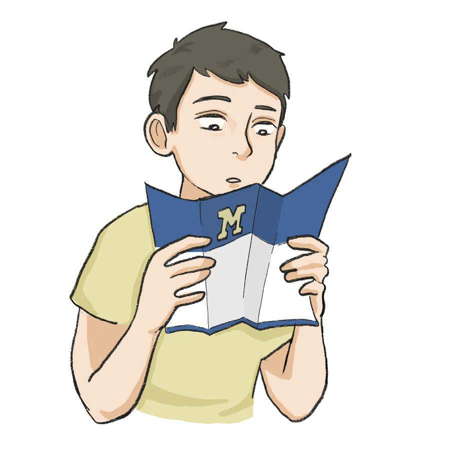
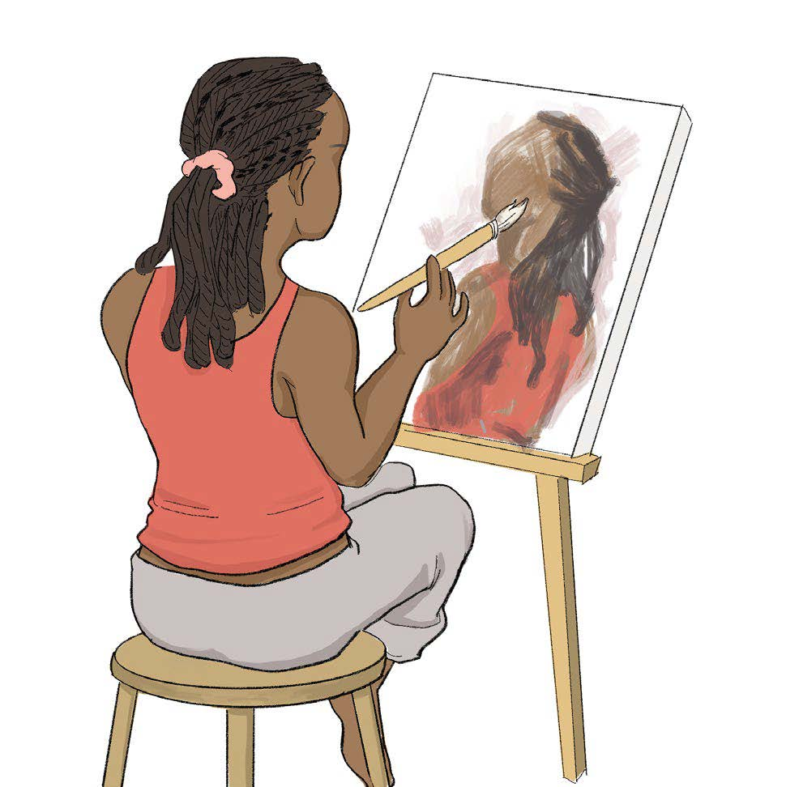
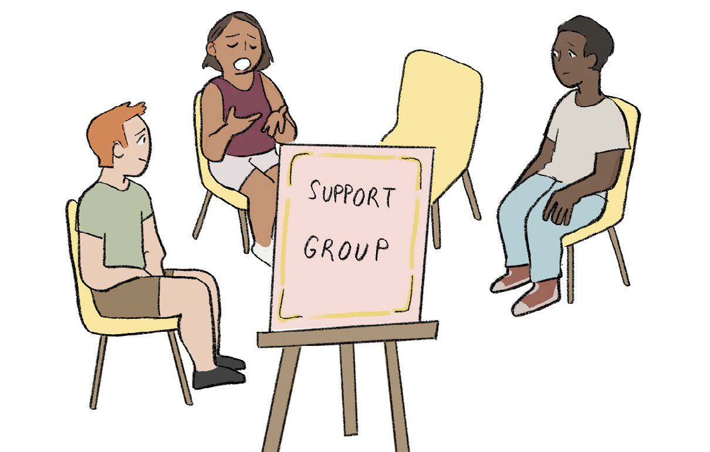

Make an Appointment
Urgent Support
Make an Appointment
Urgent Support
What We Do
CAPS is committed to creating an environment based on our values of multicultural, multi-disciplinary and multi-theoretical practices that allow our diverse student body to access care, receive high quality services and take positive pathways to mental health.
CAPS offers in-person and virtual services. Services include:
- Clinical Services
- Outreach & Community Engagement
- Training Programs
- Additional Resources
New for Fall 2024
Individual Peer Counseling

Learn more and sign up for Individual Peer Counseling.
Individual Peer Counseling (IPC) is designed to offer a new way to meet the needs of students across the University of Michigan. We are here to support student mental health and offer students a place to vent.
Uwill Teletherapy Services
Check out the Uwill FAQ.
Uwill is an addition to CAPS services that provides students with video, phone, chat, and message sessions with licensed mental health professionals at no cost. This additional counseling option offers students greater flexibility and allows CAPS to expand its service capacity.
First Year Guide
Go direct to the guide.
U-M Counseling & Psychological Services (CAPS) welcomes all of our 1st year students including those who are living on campus and those who are located remotely. We are happy to launch a new resource created exclusively for you: “Go Blue! A New Student’s Guide to Surviving and Thriving at U-M: Mental Health Tips.”
Sexualized Violence
Sexual Assault Resource Guide.
Sexualized violence does not discriminate. Sexual violence is defined as any unwanted sexual contact or interaction including sexual assault, intimate partner violence, stalking, and sexual harrassment.
Group Counseling
Check out all the group offerings this semester.
Group counseling environments are a great way to learn new skills and strategies to help you manage your mental health and well-being in a supportive environment. Led by a professional counselor, CAPS offers a variety of group sessions each semester on topics such as stress management, anxiety, depression, and more.